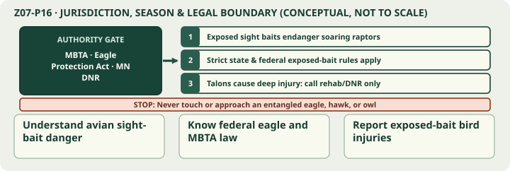

Z07-P16 · Traps and snares · New manuscript
Preventing Unintended Capture of Raptors and Protected Birds
Explain why exposed meat baits create severe federal and state legal hazards for eagles, hawks, owls, and scavenging birds.
When it applies · Conservation and legal awareness in woodland, wetland, and prairie bird habitats.
Equipment · USFWS MBTA and MN DNR reporting contacts.

Actions
- Understand that eagles, hawks, owls, and corvids locate food primarily by sight from above; exposed meat baits near capture devices create severe unintended capture risks.[L14, H14]
- Recognize that injuring or capturing protected raptors violates the federal Migratory Bird Treaty Act and Bald and Golden Eagle Protection Act as well as Minnesota exposed-bait statutes.[L01, L14, H14]
- Never attempt barehanded handling of a trapped or injured hawk, owl, or eagle—talons cause deep puncture trauma—and call MN DNR or a licensed raptor rehabilitator immediately.[L06, L14]
Failure recognition · Leaving exposed carcass scraps near equipment or grabbing an injured raptor barehanded causes federal violations and severe talon lacerations.[L06, L14]
Verify · Avian non-target protections and safe agency/rehab referral procedures are clearly recognized.[L06, L14]
Stop or change course · Stop approaching any grounded or entangled raptor; keep bystanders and pets back and call wildlife authorities.[L06, L14]
Evidence and editorial notes
- H14 · U.S. Fish & Wildlife Service · Migratory Bird Treaty Act Protections (Current web edition)
- Section: Migratory Bird Treaty Act federal protections · Conditions: All native migratory birds, nests, feathers, and eggs
Support: Federal law prohibits taking, possessing, or disturbing protected migratory birds, nests, or eggs outside regulated hunting seasons and federal permits.
Limitations: Waterfowl hunting requires both state licenses and a federal Duck Stamp plus non-toxic shot rules. · Conflicting evidence: None noted.
Editorial note: Enforces federal migratory bird law. · Specialist reviewer: USFWS and wildlife legal reviewer
Primary source · checked 2026-11-25 - L01 · Minnesota DNR · Minnesota Trapping Regulations and Fur Harvest Rules (Current web edition)
- Section: Minnesota trapping licensing, seasons, and statutory limits · Conditions: Any regulated trapping activity or legal reference in Minnesota
Support: Trapping is strictly regulated by license, season, species, trap type, set location, check intervals, and landowner permission; unauthorized trapping is illegal.
Limitations: Emergency narratives never create an exemption to set traps or snares; verify current statute and DNR handbook every season. · Conflicting evidence: None noted.
Editorial note: Primary Z07 legal boundary. · Specialist reviewer: Wildlife law and DNR enforcement reviewer
Primary source · checked 2026-11-25 - L06 · Minnesota DNR · Injured, Orphaned, or Trapped Wildlife Reporting (Current web edition)
- Section: Reporting injured, orphaned, or accidentally trapped wildlife · Conditions: Discovering a trapped or injured wild animal in the field
Support: Maintain safe distance to avoid bites, rabies, and stress to the animal; note GPS/location and contact a Conservation Officer or licensed wildlife rehabilitator.
Limitations: Never attempt barehanded release of distressed carnivores, raptors, or large mammals. · Conflicting evidence: None noted.
Editorial note: Establishes Z07 incidental-capture reporting protocol. · Specialist reviewer: Wildlife rehabilitator and DNR officer
Primary source · checked 2026-11-25 - L14 · Minnesota DNR · Birds of Minnesota and Protected Species Reference (Current web edition)
- Section: Raptor and migratory bird vulnerability to exposed bait sets · Conditions: Woodlands, wetlands, and prairie edges with raptors and scavengers
Support: Exposed meat baits attract protected hawks, owls, eagles, and scavengers, creating severe federal and state non-target capture hazards.
Limitations: Federal MBTA and Bald and Golden Eagle Protection Act impose strict penalties for protected bird injury. · Conflicting evidence: None noted.
Editorial note: Highlights avian non-target vulnerability. · Specialist reviewer: Ornithologist and legal reviewer
Primary source · checked 2026-11-25
Current assessment · A04-L14 (2026-11-25) · Open: support partial or missing (A04): No coupled bait-attraction and legal-trigger support. Keep non-target harm avoidance and refer exact question to wildlife authorities. Limits: Specialist review PENDING (Ornithologist and legal reviewer); publication HOLD. All release decisions pending.
Source lineage · New manuscript (Z07 P18 unintended capture) · Classification · New manuscript.